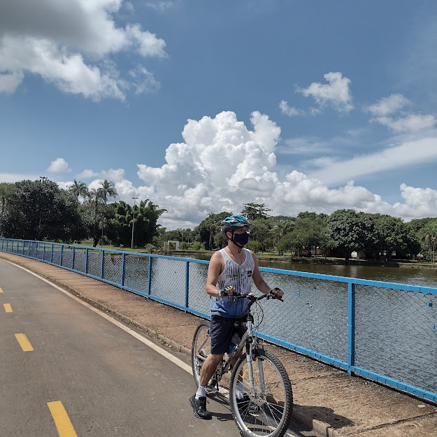

Nas minhas horas de lazer, as minhas diversões favoritas são ouvir música, tocar violão, assistir TV, andar de bicicleta, ficar perto da família, ir ao parque da cidade e ao cinema as vezes, mas se a rotina for quebrada de vez enquando tá tudo certo, pois a monotonia pode nos deixar um pouco desanimados.
Locais: DATA CONTROL e SARMENTO.
Local: SENAC
Local: CENTROPLAN
Local: Círculo Operário do Cruzeiro
Local: RAM FILE-Informática
Local: CEPED CURSOS
Local: CEPED CURSOS
Local: PRAXIS
Função:Contínuo (Offce Boy, serviços diversos internos e externos).
Período: de 17/04/2000 a 31/08/2000
Função:Operador de Telemarketing (atendimento e cadastro de estudantes).
Período: 02/09/2005 a 01/03/2006.
Função:Auxiliar de Documentação (setor de arquivo- Projeto SEBRAE).
Período: 23/06/2008 a 02/06/2012.
Função:Auxiliar Administrativo - Ministério da Cultura (recebimento, conferência e arquivamento de processos /documentos).
Período: 06/03/2013 a 10/05/2013.
Fução: substituições temporárias dos funcionários efetivos, exercendo atividades específicas de cada setor nos Ministérios das Comunicações e da Cultura.
Período: de 2006 a 2008 e de 2012 a 2014.
Fução: Aux. de Escritório
• Gestão de Categorias – extração no sistema de planilhas de vendas dos produtos para analise da coordenação de compras, visita em lojas para verificação se os produtos estavam expostos nas prateleiras de acordo com o planograma.
• Contas a pagar - recebimento de notas fiscais de fornecedores, conferência de datas de vencimento/valores de boletos e arquivamento em local específico para serem pagos de acordo com o vencimento.
Período: 22/07/2014 a 21/03/2018.
Fução: Aux. de vendas-Organização das roupas no estoque da loja por marcas e modelos, recebimento e separação das peças novas para área de vendas e estoque.
Período: 15/05/2019 a 01/07/2022.
Os exercícios físicos, de modo geral, são necessários para um corpo saudável e cheio de energia, previne várias doenças causadas pelo sedentarismo, os exercícios abdominais por exemplo, são bons para evitar o surgimento de gorduras localizadascaso for pedalar, use de preferência em uma ciclovia para evitar acidentes de trânsito.
A música faz parte da minha desde a infância nos anos 80, com aquelas músicasa infantis dos grupos musicais da época, mais tarde,nos anos 90, foi uma década de ouro para mim com inesquecíveis canções e foi nessa década em 1996 que aprendi a tocar o violão.
2 anos mais tarde, fui convidado para tocar no coral da casa Espírita que frequento, onde atualmente participo.
Foi uma grande satisfação ensinar violão para algumas pessoas e vê-las tocando, pois acredito que o conhecimento deve ser compartilhado até mesmo por quem não sabe muito como eu.